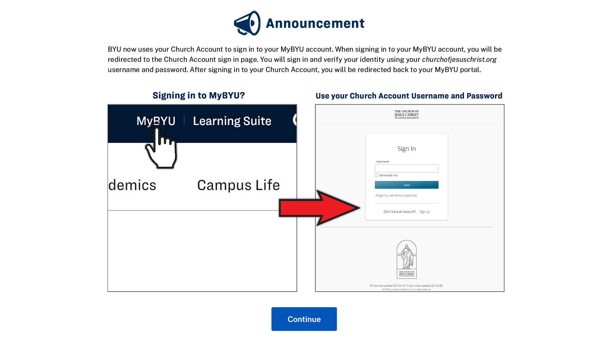

BYU now uses your Church Account to sign in to your MyBYU account. When signing in to your MyBYU account, you will be redirected to the Church Account sign in page. You will sign in and verify your identity using your churchofjesuschrist.org username and password. After signing in to your Church Account, you will be redirected back to your MyBYU portal.
